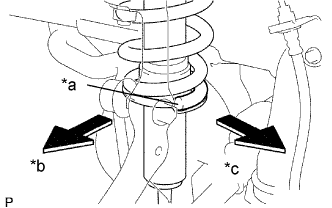
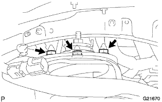
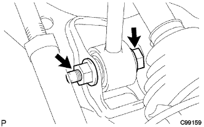
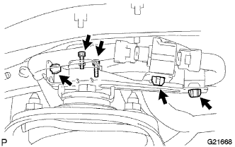
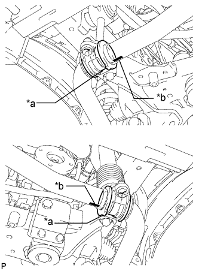
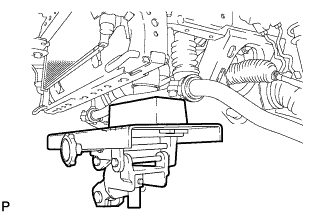
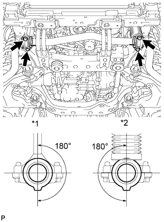
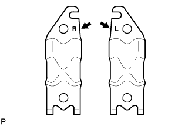

FRONT SHOCK ABSORBER > INSTALLATION |
| 1. TEMPORARILY INSTALL FRONT SHOCK ABSORBER WITH COIL SPRING |
|  |
Install the coil spring to the vehicle body with the lower end of the coil spring facing the rear side of the vehicle.
| *a | Lower End |
| *b | Outer Side |
| *c | Rear Side |
|  |
Install the 3 nuts to the top of the front shock absorber with coil spring.
|  |
Temporarily install the bolt, washer and nut as shown in the illustration.
 |
Using SST, install the bracket with the nut.
|  |
Using a 4 mm hexagon wrench, install the absorber control actuator with the 2 bolts.
Attach the 3 clamps and connect the connector.
| 2. INSTALL FRONT STABILIZER BAR |
|  |
Install the 2 front stabilizer lower bracket bushes to the front stabilizer bar.
| *a | Protrusion |
| *b | Mark Position |
|  |
With the identification marks of the front stabilizer bar facing downwards, support the front stabilizer bar with a jack.
|  |
Install the front stabilizer bar and 2 front stabilizer lower brackets with the 4 bolts.
| *1 | Stabilizer Link |
| *2 | Stabilizer Cylinder |
| 3. INSTALL FRONT STABILIZER END BRACKET |
|  |
Install the 2 front stabilizer brackets and 2 front stabilizer link bushes with the 4 bolts.
| 4. INSTALL FRONT SUSPENSION MEMBER BRACE SUB-ASSEMBLY |
Install the 2 member braces with the 6 bolts.
| 5. INSTALL NO. 1 ENGINE UNDER COVER SUB-ASSEMBLY |
 |
Hook the No. 1 engine under cover to the vehicle body as shown in the illustration.
Install the 4 bolts.
| 6. INSTALL LOWER FRONT BUMPER COVER |
Install the lower front bumper cover with the 5 bolts and clip.
| 7. INSTALL FRONT WHEEL |
| 8. STABILIZE SUSPENSION |
Lower the vehicle.
Bounce the vehicle up and down several times to stabilize the suspension.
| 9. TIGHTEN FRONT SHOCK ABSORBER WITH COIL SPRING |
Tighten the nut.
| 10. INSPECT AND ADJUST FRONT WHEEL ALIGNMENT |
Inspect and adjust the front wheel alignment (Click here).